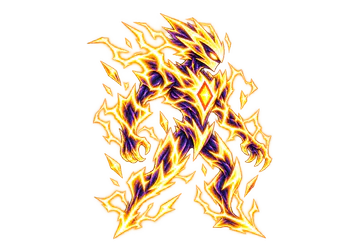
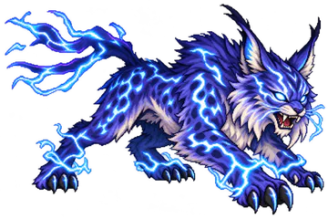
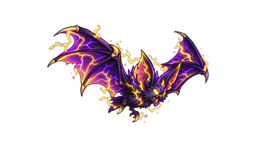
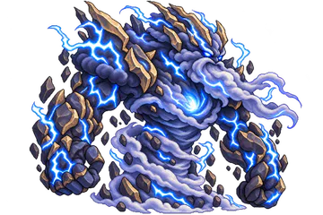

Elemental Knights › Elementos › Raio
Elemento
Raio
Velocidade, precisão e domínio absoluto sobre o ritmo do combate — vence impondo um ritmo acelerado, atacando antes dos adversários.
Estratégia
Como jogar com o Raio
O Raio joga na velocidade e age antes dos inimigos. Agilidade Elétrica dá +15% de Velocidade para cada inimigo vivo, e Corrente em Cadeia aplica Paralisia em até 3 inimigos de uma vez.
A Descarga Concentrada causa 290% e mais 16% por Intensidade de Paralisia do alvo. A Ultimate, Prioridade Absoluta, faz cada Paralisia aplicada avançar 12% da sua Barra de Ação por 12 segundos.

Contra ÁguaSuas Habilidades causam +50% de dano.

Contra TerraSuas Habilidades causam −50% de dano.
Na Estratégia Elemental você escolhe 2 Passivas e 3 Ativas do Raio, e a Ultimate ocupa um dos 3 lugares de Ativa. Lutar com o Raio aumenta a sua Maestria nele.
Efeito especial
Paralisia
Paralisia Intensidade I a V
Empurra a Barra ATB do alvo para trás e reduz a Velocidade, a Evasão e o dano dele, que passa a receber mais dano.
Sempre ativas
As 6 Passivas
Funcionam sozinhas durante a batalha. Você leva 2 delas.
-
Relâmpago
- Seus ataques ganham 15% de chance de aplicar 1 Intensidade de Paralisia
- Inimigos com Paralisia 4 ou mais perdem 20% de Velocidade
-
Agilidade Elétrica
- +15% de Velocidade para cada inimigo vivo (máx. +45%)
-
Magnetismo
- No início da batalha, troca de lugar o primeiro e o último inimigo
-
Corrente Elétrica
- +5% de Velocidade para cada Intensidade de Paralisia, somando todos os inimigos (máx. +40%)
- Se essa soma chegar a 3 ou mais: +30% de Ataque
-
Carga Elétrica
- A cada 3 Paralisias que você aplicar: uma descarga causa 50% do Ataque em todos os inimigos
-
Campo Eletrostático
- Inimigo com Paralisia que atacar você ganha +1 Intensidade de Paralisia
Você decide a hora
As 8 Ativas
Entram na Fila de Habilidades e são usadas quando a Barra ATB enche. Você leva 3, incluindo a Ultimate.
-
Prioridade Absoluta Ultimate
- Por 12 s: cada Paralisia que você aplicar avança 12% da sua Barra de Ação (até 1 vez por segundo)
Recarga: 16 s
-
Piso Energizado
- Causa 80% do Ataque em todos os inimigos e reduz a Velocidade deles em 10% por 12 s
- Você ganha +3% de Velocidade por inimigo atingido, pelo mesmo tempo
Recarga: 8 s
-
Campo Instável
- Por 10 s, a cada 2 s, ganha um bônus aleatório: +5% de Esquiva, +3% de Velocidade ou +15% de chance de Paralisia
- Os bônus acumulam e somem todos ao final
Recarga: 12 s
-
Choque Interno
- Você sofre dano igual a 10% do seu Ataque
- Remove até 3 Intensidades de efeitos negativos de você
- +5% de Velocidade por 8 s para cada Intensidade removida
Recarga: 10 s
-
Corrente em Cadeia
- Atinge até 3 inimigos em sequência: 145%, 113% e 80% do Ataque
- Aplica Paralisia em todos os atingidos (garantida)
Recarga: 11 s
-
Tempestade Estática
- Por 10 s, todos os inimigos: -5% de Velocidade
- Cada ataque que eles receberem tem 38% de chance de aplicar 1 Intensidade de Paralisia
Recarga: 6 s
-
Descarga Concentrada
- Causa 290% do Ataque em 1 inimigo, +16% para cada Intensidade de Paralisia dele
- Depois, consome toda a Paralisia do alvo
Recarga: 8 s
-
Interferência Magnética
- O inimigo com a Barra de Ação mais baixa perde 20% dela
- Depois, todos os inimigos ficam com a Barra igual à dele
Recarga: 14 s


Bestiário
Monstros do Raio
Para enfrentá-los, entre com a Terra. Os 8 monstros do Raio em Entherya, do mais forte ao mais fraco:

Elemental de Raio
Tier 5 · Chefe da etapa 3-2

Lince Tempestuoso
Tier 6

Morcego Estático
Tier 4 · Chefe da etapa 1-4

Titã da Tempestade
Tier 7
- Titã da Tempestade T7
- Lince Tempestuoso T6
- Elemental de Raio T5 · Chefe 3-2
- Escorpião Voltaico T5
- Morcego Estático T4 · Chefe 1-4
- Esqueleto Eletrocutado T3
- Rato Estático T2
- Capivara Elétrica Filhote T1
Perguntas frequentes
Raio: dúvidas comuns
Qual Elemento vence o Raio em Elemental Knights?
A Terra vence o Raio: as habilidades da Terra causam +50% de dano contra ele. Já as habilidades do Raio causam −50% contra a Terra.
Contra qual Elemento o Raio é forte?
O Raio vence a Água: suas habilidades causam +50% de dano contra inimigos da Água.
O que faz a Paralisia?
A Paralisia é o efeito do Raio, com Intensidade de I a V. Empurra a Barra ATB do alvo para trás e reduz a Velocidade, a Evasão e o dano dele, que passa a receber mais dano.
Qual é a Ultimate do Raio?
Prioridade Absoluta: Por 12 s: cada Paralisia que você aplicar avança 12% da sua Barra de Ação (até 1 vez por segundo); Recarga: 16 s.
Em quais mapas o Raio fica mais forte?
Fábrica Abandonada, Mina de Metal Magnetizado: nesses terrenos o Raio causa +10% de dano e tem +2% de chance de aplicar Paralisia.
Quais Chefes são do Raio?
No Modo História: Morcego Estático (etapa 1-4), Elemental de Raio (etapa 3-2).
Os seis Elementos
Conheça os outros


Escolha o seu Elemento
Elemental Knights é um RPG de estratégia para Android, grátis, em pixel art. As novidades e os convites para testar o jogo saem primeiro no Instagram.